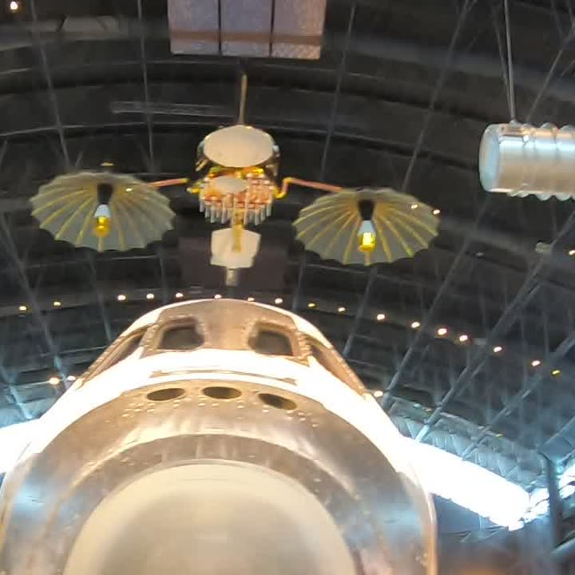
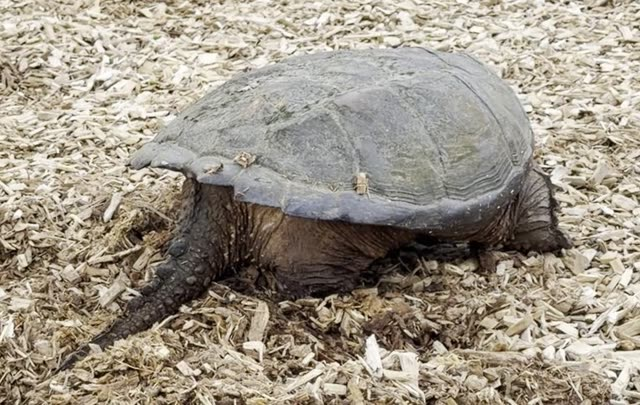
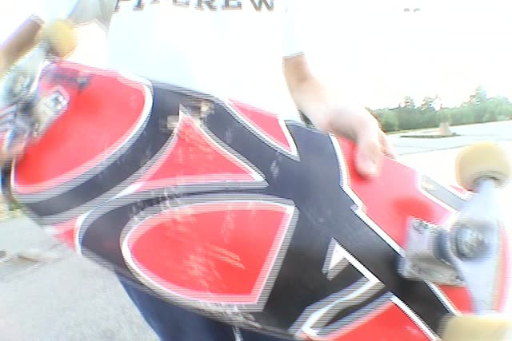
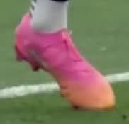
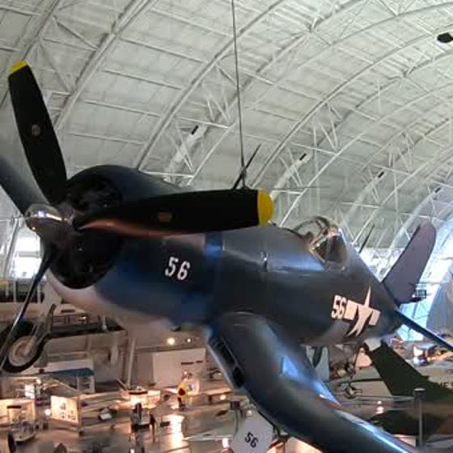
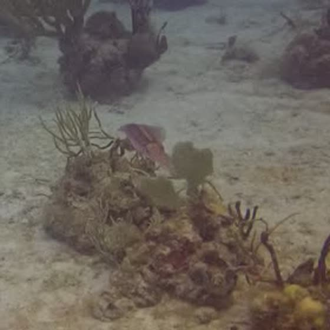
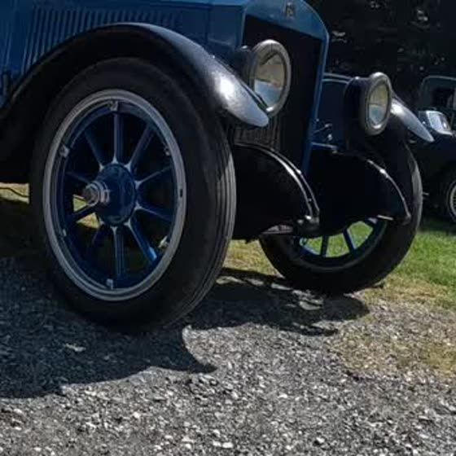

the self-hosted studio suite. one workflow, card to credits — offload, index, cut, render, store, then search back into the footage.
your footage stays home · ai models on call, never on autopilot
scroll — the whole ad runs long ↓


the self-hosted studio suite. one workflow, card to credits — offload, index, cut, render, store, then search back into the footage.
your footage stays home · ai models on call, never on autopilot
scroll — the whole ad runs long ↓
every camera you've ever carried — phones, action cams, 360 rigs, drones, the old handycam — has been quietly stacking hours onto a pile nobody could ever sit down and watch. it grows faster than any human can edit. the whole suite exists to move that mountain.
the foundation under everything downstream — every clip transcribed, measured, scored, and mapped before a single cut is made. cuts, ai edits, and prompt search are all just questions asked of the index.
the batch bay pointed straight at the mountain — decades of unwatched footage in, watchable parts out. it reads the index, cuts to the beat, and resurfaces memories you forgot you filmed, while you sleep.
renders aren't one flavor. the same indexed footage comes back as a clean cut, a nature documentary, a star chart — or a full technical teardown of itself.
wildlife, aviation, steam engines, museum halls, local history — detection finds it, tracks it, and writes the story on screen. bounding boxes optional, facts on the slate.
the same idea pointed up — celestial bodies and constellations identified and drawn over your night-sky footage.
insanely revealing — the whole database worn as a hud around the video. camera, lens, resolution and frame rate, live transcription, detections, beat grid, and every mode flag used to cut it.
one sentence against everything the index knows — what you want, how long, which render style — and the counter hands back a finished part.
resolves against · transcripts · detections · gps · camera metrics · dates · scores
→ rendered merry_christmas_alltime_v1.mp4 · 02:41 · versioned · stored
the light table that closes the loop — hand it a reference image and it searches back into the stored footage, timestamp by timestamp. local matchers do the looking; ai verification only when you call for it.






this run searched for · 6 frames · 2 picks · filter: date ▸ run ▸ category — try the light table: tap a frame to pick it
the workflow crew around the suite — one job each, built to never lose a file. spotter's light table works upstairs; the shed holds the rest.
sd offload with receipts. every file on the card verified byte-for-byte on the nas before you're cleared to wipe it. "all safe ✔" or it doesn't happen.
the shed has empty pegs. more one-job tools hang here as they're built.